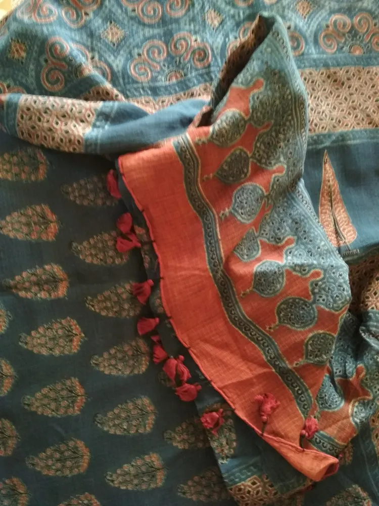

Ajrakh Block Printing: A Buyer’s Guide to Process, Pattern and Provenance

Begin with process, not just palette
Khamir describes Ajrakh as a multi-stage practice of washing, mordanting or preparing cloth, resist printing, dyeing, rinsing and sun-drying. It also links the visual language to complex geometry commonly seen in indigo, madder, black and white. That means a blue-and-red fabric is not automatically Ajrakh, and appearance alone cannot prove the exact dyes or origin. A thoughtful buyer starts by asking how the textile was made, where it was printed and whether the seller can identify the artisan or workshop.
Look for alignment across repeated blocks
Hand block printing is built from repeated impressions. Examine where motifs meet: small shifts, pressure changes and variations in colour can reveal the rhythm of manual alignment, but no single irregularity is a certificate of authenticity. Turn the cloth over to see how colour has travelled through the fibre and compare several areas rather than inspecting one convenient corner. Very perfect repetition can come from excellent hand skill, while obvious variation can also be imitated. Provenance and process explanation remain more reliable than a checklist of visual imperfections.
Understand why multiple colours take time
Khamir’s process account explains that blocks are selected and aligned in sequence, with washing and drying between stages. Different recipes create resist, black and red areas, while indigo and other dye processes add further layers. The practical lesson is not to memorise every ingredient but to recognise accumulated labour. Ask how many printing and dyeing stages a piece went through. If a seller uses the term natural dye, ask which colours are natural and how they recommend caring for the cloth; avoid repeating the claim without confirmation.
Use careful questions about origin
Ask for the village or cluster, the printer’s name, the base cloth and the type of dye. Khamir situates contemporary Ajrakh practice in Kachchh and discusses Ajrakhpur as part of the craft’s response to water conditions after the 2001 earthquake. That context should not be reduced to a romantic label. Water quality, material access and market pressure affect production. A seller who can explain the making chain gives you more useful evidence than a generic tag that says handmade or ethnic.
Match the purchase to actual use
Before choosing a stole, garment length or home textile, ask about colour transfer, shrinkage, pre-washing and care. Check the full piece for printing faults you are not comfortable with, while remembering that manual work does not promise machine uniformity. Consider whether the scale of the motif suits the final garment and whether tailoring will interrupt borders. If buying online, request measurements and photographs of the actual piece where possible. Do not assume a display image represents every cut from a longer printed length.
Price comparisons need like-for-like information
Two textiles that look similar may differ in base fabric, number of stages, dye system, scale, finishing and who receives the margin. Compare those facts before calling one overpriced. A lower-cost printed product may be a legitimate design choice when labelled clearly; the problem is a false claim of hand block printing or artisan provenance. Support Vocal for Local by rewarding transparent information, not by demanding an unverified heritage label at the lowest possible price.
Tell the maker’s story with permission
For a creator collaboration, put the artisan or workshop name on screen, show process only where filming is allowed and confirm terminology before publishing. Do not turn a short demonstration into a claim that you witnessed the entire multi-stage process. If a product is gifted, discounted or part of a paid collaboration, disclose that connection prominently. Link viewers to a direct or traceable purchase route when available. Good craft content helps an audience see time, skill and material decisions—and lets the maker remain more than a decorative background.